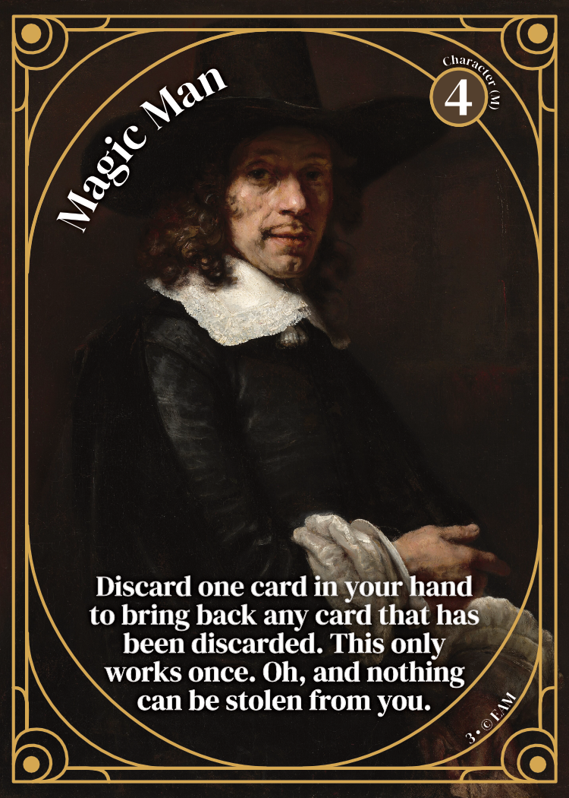
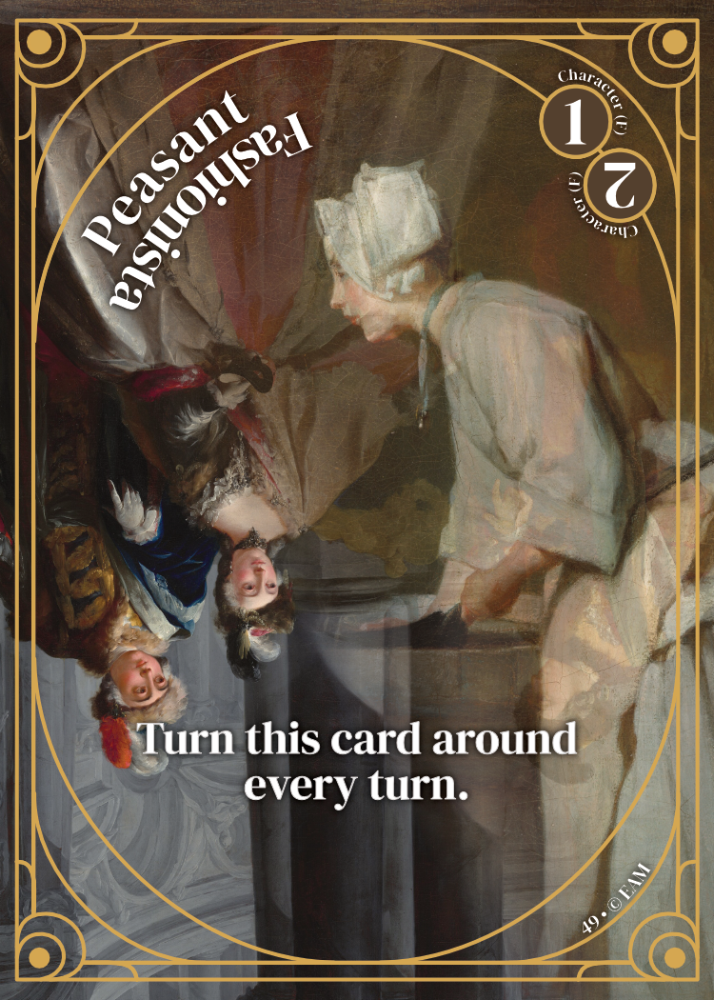

Important Update: We're happy to announce that we will be releasing a new version of Ever After More. (Release date TBA.) Any editions printed prior to 2024 will also now be considered limited edition and collectible as we will no longer be printing them.
Ever After More
(Insert Description)
Rules
You play. You win.
Card Types:
- Character/Creature (previously labeled as “Person” and “Animal”) — Cards that can attack.
- Note: If a card is not labeled male (M) or female (F), then it is genderless.
- Item — Either played instantly or equipped to a Character or Creature.
- Spell — To be used for or against you.
- Location — Cards that are in play for 5 turns of the player who plays the card. These cards affect every player. Players can only play up to two Location cards at a time. To switch out an in-play Location card, the player must discard one in-play card for a new one.
- Counter (previously labeled as “Spell Instant” or “Item Instant”) — Cards that can be played out of turn and are only usable once.
- 1 Use — Cards that are only playable on your turn.
- Equip — Cards that can only be played on your turn. You can only equip one card to each Character and/or Creature card in play. If you switch equipped cards, the previously equipped card is now discarded*.

Before playing, deal 5 cards to each player and give 15 life points to everyone.
Turn Phases:
- Draw two cards.
- Lay down cards and/or equip. You can only have up to 5 Character and/or Creature cards in play at one time. Location and equip cards do not count towards the 5 card limit. However, you can only have up to two Location cards in play at one time.
- Attack! (No player can attack on their first turn.) You choose who you are attacking and with which card. You can attack up to as many Character/Creature cards as you have in play, per turn, but each card in-play only gets one attack per turn (unless otherwise specified). Ex: if you have three cards in play, you can attack three times. Also, don’t forget to use your cards’ abilities.
- End turn. Remember: Counter cards can be played out of turn.
- Each player keeps their own discard pile.
How to Calculate Damage:
Subtract the difference between attack values from the amount of life points the opponent has. Ex: If you attack with a 3 attack and you attack a 2 attack card, the -1 difference will be subtracted from your opponent’s life points. If your opponent manages to play cards to raise their card’s attack value to greater than your attack value, you suffer the damage.
How to Win:
The last person with life points wins, but there's a catch. Each card has a number on it to represent its value (in the top right or left corner of the card). Count those points up and now see who wins. You can count from your discard pile, your hand, and from your cards in play.
Another way to play is via battle. The same rules apply, but each player has their own deck.
If you run out of cards in the deck, keep playing until you lose life points.
The Deck
How to Build a Deck:
A standard deck comes with 104 cards: 52 Character and Creature cards and a mix of Spell, Location, and/ or Item cards to total another 52. Each card is categorized into one of the following categories; Location, Character, Item, Counter, Spell, or Creature.
Players can add to their decks, by purchasing booster packs, which are an assortment of 18 cards, chosen at random.
Further Information on Specific Cards:
- Ice Castle — the Attacked gets to decide if the first attack is a hit or miss. This decision can change every turn.
- Team Play — Two or more of your cards can gang up to attack one card of your opponent.